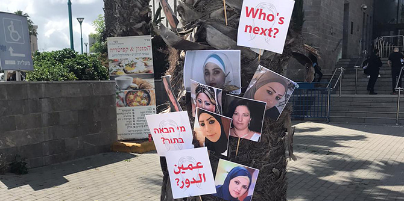

Since the start of the coronavirus crisis, 13 Arab and Jewish women have been murdered in Israel and reports of domestic violence have skyrocketed. In April alone, over 250 women contacted Na'am – Arab Women in the Center (AWC) for help in dealing with domestic violence, economic difficulties and emotional distress. The organization is in a continuous race against time to prevent the next murder.
As the situation escalated, and despite the fear of contagion, on June 1, around 12,000 people demonstrated in Tel Aviv to protest the murder of women, gender-based violence, and the lack of protection and action on the part of the government and local authorities.
Samah Salaime, social activist and director of Na'am–AWC, was asked to speak to the demonstrators and many thousands more viewed her speech online and read it in the media. Professor Daphna Hacker of Tel Aviv University later wrote that the speech should be taught to every child in the country and should be part of the compulsory gender education programs in high schools.

Na’am–AWC, a community-based organization active in the mixed Arab-Jewish cities of Ramla, Lod and Yafo, aims to support women and to bring an end to the phenomenon of femicide, erroneously termed “honor-killing.” The organization has had to step in where municipal, governmental and humanitarian assistance is conspicuously lacking. At the beginning of the lockdown in Israel, the organization launched an emergency program that attempts to meet the pressing needs of women at risk, combined with a response developed by a national coalition of Arab women’s groups.
Understanding the urgency, the Mandel Foundation provided Na’am–AWC with support for their emergency initiative that addresses critical needs in four main areas at this time: extending the hours of their social workers from three to five days a week; providing vouchers to Arab women and their children who are under threat, in order to enable them to stay in empty hotels or hostels until they find housing (there are not enough women’s shelters in Israel); providing food packages to needy families, especially single-parent mothers (over 150 packages have already been distributed); running advertising campaigns to let women know that help is only a call or a click away, and printing informational flyers with their contact details to be posted in public places.
In April, following the brutal murder of Zamzam Mahamid, a young Arab woman who was shot to death in the street by a family member, Na’am–AWC organized a coalition of social-justice organizations for a virtual protest against the murder of women and over 100,000 people participated via social media. During the lockdown, Zamzam, a troubled teen, had been forced to return to her family, where she found herself shut in with her killer.
Another young Arab woman whose life was in danger was found during the distribution of food packages. Members of Na'am–AWC were led to her apartment where the woman was hiding from her family. Before the lockdown, the woman had planned to flee the country; however, now she found herself without work, money or food. As soon as the organization members arrived at her door, her 4-year-old daughter rushed to grab a loaf of bread and started eating it ravenously, in a way that made it clear she had not eaten for days.
In a recent case, a photo of a young woman who had terrible bruises all over her body was uploaded to Facebook. When the organization located her, after much effort, she turned out to be a 21-year-old mother with a 3-year-old child. The woman had been imprisoned in her home by her husband, who beat her on a daily basis. Together with police and welfare officers, Na'am–AWC moved the mother and child to a battered women’s shelter.
Some women have also turned to Na'am–AWC for emotional support. A student struggling with regular threats from her abusive brother was encouraged by the organization to seek treatment. Na'am–AWC arranged for her to receive weekly online sessions with a psychotherapist. The organization closely monitors 19 women in similar situations to ensure that they receive support from mental health professionals.
In June, Na'am–AWC participated in an extensive, Arabic-language campaign designed to remind people, especially during the crisis, of their responsibility to report suspected abuse, as well as to encourage friends, family and neighbors to assist one another. The campaign included two powerful videos that received 1.2 million views and interactions on social media.
Recently, Samah Salaime was appointed to be a member of an ad hoc committee in the Prime Minister’s Office formed to improve welfare services for women and teens during the coronavirus crisis. In this capacity, she presents the special needs of Arab women. She also reviews the policies implemented in other countries where coronavirus prevention measures have intensified the threat to women, and is currently evaluating which of them would be relevant to adopt in Israel.
In 2018, Samah Salaime was named one of the 10 most influential social activists in Israel by the daily Yedioth Ahronoth. In 2019, she was elected to serve as a board member of the Hebrew University. In 2020, Samah Salaime was awarded the Rappaport Prize for Longstanding Achievement. She is interviewed regularly on local news channels on issues relating to women's status in society.
Photo courtesy of Na'am–Arab Women in the Center (AWC).
{kind=link}